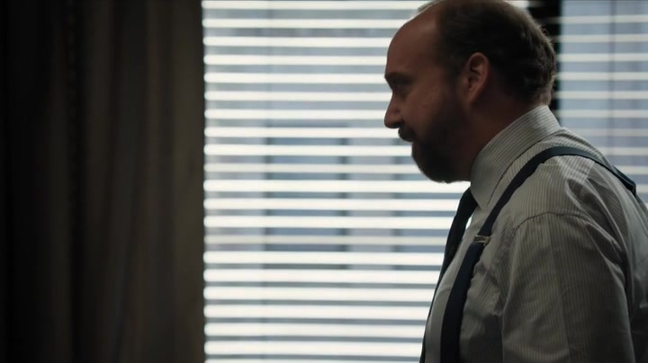

01
罗兹家 / 逮捕之后
她不在现场，仍被放进了嫌疑。

剧情事实温迪指责查克刻意让她错过 Bill 被捕，使同事可能认为她提前知情。查克回答公司最终会消失，她有才华可以另找工作。温迪愤怒离开；查克的“保护”没有回答她对职业信誉受损的担心，也没有承认她想保留这份工作。[1][2]
这一场为什么重要 · 个人解读
上一集的时间安排在这里收到后果。查克认为避开现场就能减少伤害，温迪认为被排除反而留下解释不了的空白。更刺痛她的是丈夫把职业失去当成可以用个人条件弥补的小事。双方争的既有信任，也有谁能决定另一人的事业究竟值多少。
因此 → 温迪必须主动维护自己的位置，不能等待两人替她解释。